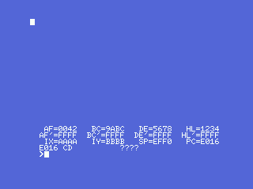
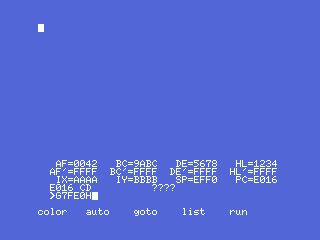
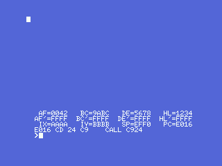
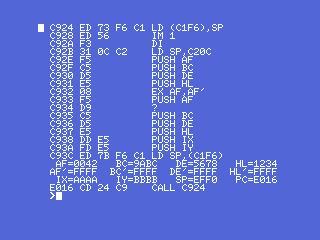

Demonia carries a whole machine-code monitor inside it — a debugger, written by Claude Sablatou for Loriciels in 1984, riding along in the 1986 game because the same man wrote both. The Findings page tells how it was found and why, on this tape, it no longer answers: the game recorded its 24 screen records straight over the monitor's own data section (0xD000-0xD8FF), erasing its command table, its disassembler tables and about a dozen of its screen and keyboard subroutines.
This page is about putting it back on its feet — and it works.
To be clear from the start: this is not the original debugger recovered whole. We do not have 100% of Sablatou's code. About 40% of the monitor — the data and routines the game erased — no longer exists anywhere and had to be rebuilt. What runs is roughly 60% his surviving original code and 40% reconstructed to match it: a working equivalent, not the lost original.

Sixty per cent of the monitor is intact: its command interpreter, its single-step, its register dump, its disassembler code, and all its text, live on untouched from 0xC24D to 0xCFFF and 0xD900 to 0xDAC7. What the game destroyed was its data, in 0xD000-0xD8FF:
| lost piece | what it was |
|---|---|
command table (0xD5C6) | 15 entries of initial letter + handler pointer |
disassembler tables (0xD64A, 0xD67C, 0xD826, 0xD88B, 0xD5F3…) | ~2 KB: mnemonics, opcode maps, operand-format pointers |
screen/keyboard subroutines (0xD200-0xD2E8) | clear, new-line, wait-a-key… |
This is a reconstruction, not a recovery. Sablatou's original bytes for those tables and routines are gone for good. What follows is a functional equivalent: new code and data that fulfil the exact same contracts the surviving code expects, so that his surviving code runs again and the monitor behaves as it did.
The surviving low-level machinery — writing a character to the screen, reading the keyboard, the command dispatcher, the handlers — needed only a handful of its erased helpers rebuilt from how the survivors call them: 0x0072/INITXT for its 40-column text screen (proven by its own cell geometry, row*40 + col + 2), CHGET for its key wait, and the screen-clear primitives. With those in place the monitor boots, sets up its screen, and paints the twelve registers of the stopped program — the picture at the top of this page, where HL=1234, DE=5678, IX=AAAA are the values a small launcher put there on purpose.
The command table was rebuilt letter by letter from the surviving handlers. Two are wired and proven so far:
G — Go. The handler at 0xC5D3 parses a hex address, stores it and jumps there. The fossil left the last thing the author ever typed, G7FE0, frozen in the input buffer. Typing that exact command back into the resurrected monitor jumps to the sound routine at 0x7FE0 — his 1986 debugging session, replayed by hand:

The disassembler was the hard part. Its tables were the most thoroughly erased, and the routines that formatted its operands lived in the dead zone too. So the disassembler is the most complete equivalent: a compact Z80 disassembler that fulfils the monitor's contract — given an address in IX, it writes the mnemonic text and the instruction length exactly where the surviving display code (0xC568) expects them. Only that one call had to be repointed.
It covers the whole Z80 instruction set — unprefixed, CB, ED, DD/FD (IX/IY) and DDCB/FDCB — and it was checked instruction by instruction in the emulator: 38 of 38 correct, including relative jumps, (IX+d) and (IY-d) displacements and every instruction length. The register dump already proves it on screen — the line under the registers reads the instruction at the program counter:

And with the L (list) command wired to its surviving handler at 0xC535, the monitor will disassemble any range. The finest proof there is: the monitor disassembling its own machine code, its entry routine, live on screen — LD (C1F6),SP, IM 1, the register-saving PUSH sequence, LD SP,(C1F6):

Numbers use the Intel/Loriciels convention the parser expects: a hex address carries a trailing H (L7FE0H,7FE6H). The reconstruction lives in the repository under debugger/: the disassembler generator (gen_disasm.py), the rebuilt helpers and command table, and the openMSX scripts that boot the monitor and captured every screenshot on this page on a real MSX1 (a Philips VG-8020). Nothing here is a mock-up; every picture is a raw frame from the emulator running the reconstructed monitor.
Careful with the claim: what is measured is that the reconstructed monitor boots, accepts commands and disassembles correctly, shown by the captures and a 38/38 instruction check. What is a reconstruction — stated plainly — is the command table's letters, the rebuilt helper routines and the disassembler itself; those are equivalents, not Sablatou's lost originals.